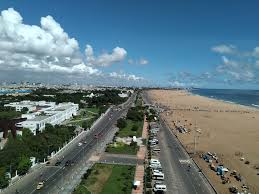
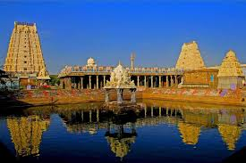
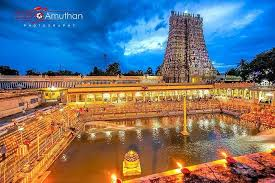
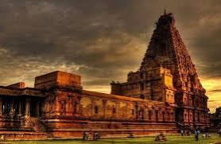
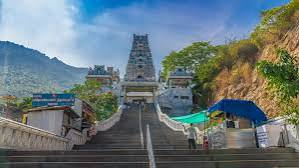
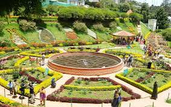
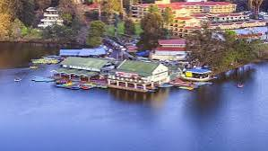
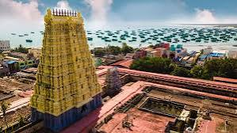
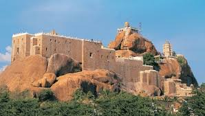
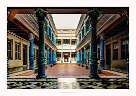

Marina Beach
India's longest urban beach with scenic views.

India's longest urban beach with scenic views.
Ancient Hindu temple dedicated to Lord Shiva.
Historic fort and museum showcasing colonial history.
Roman Catholic basilica built over the tomb of Saint Thomas.
UNESCO World Heritage Site, ancient rock-cut temples by the sea.
Monolithic rock-cut temples in the shape of chariots.
Giant open-air bas-relief depicting scenes from the Mahabharata.

Oldest temple in Kanchipuram, dedicated to Lord Shiva.
Ancient temple dedicated to Lord Shiva, with a thousand-pillar hall.

Iconic Hindu temple with towering gopurams (gateway towers).
Grand palace built in Indo-Saracenic style.
Museum showcasing Mahatma Gandhi's life and teachings.

UNESCO World Heritage Site, ancient temple dedicated to Lord Shiva.
Royal palace complex with art gallery and Saraswathi Mahal Library.

Hilltop temple dedicated to Lord Murugan.
Meditation center and temple dedicated to spirituality.

Lush gardens with a variety of exotic plants and flowers.
Artificial lake offering boating and scenic views.

Man-made lake surrounded by hills and lush greenery.
Botanical garden with a wide variety of plants and flowers.

Famous Hindu temple with a sacred water tank (teertham).
Ghost town and pilgrimage site near the tip of the Indian peninsula.

Largest functioning Hindu temple complex in the world.
Ancient fort complex with temples and panoramic views.
Southernmost tip of mainland India, known for Vivekananda Rock Memorial and Thiruvalluvar Statue.

Region known for its unique Chettinad cuisine, mansions, and cultural heritage.
Harvest festival celebrated with fervor across Tamil Nadu.
Dance festival held annually at Chidambaram Nataraja Temple.
Opportunities in the Western Ghats and Nilgiri Hills.
Explore diverse flora and fauna in sanctuaries like Mudumalai and Indira Gandhi Wildlife Sanctuary.